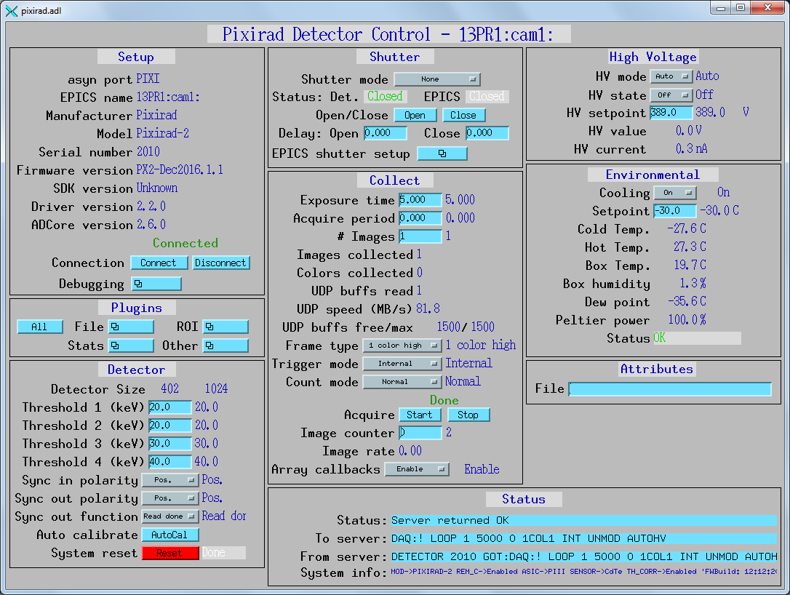

ADPixirad
areaDetector Pixirad driver
- author:
Mark Rivers, University of Chicago
Introduction
This is an areaDetector driver for the Pixirad detectors from Pixirad.
The Pixirad detector is a pixel array detector with a cadmium teluride (CdTe) sensor, so it has high efficiency at high energy. There are 2 versions of the ASIC, the older PII, and the newer PIII. The PII base module is 476 x 512 pixels, while the PIII is 402 x 512 pixels. The detector is available with a single module (Pixirad-1), 2 modules (Pixirad-2), and 8 modules (Pixirad-8).
The detector does photon counting of all photons above a programmable energy
threshold. The detector hardware has 2 energy thresholds and two counters per
pixel, so it can collect 2 energy images simultaneously. The PII firmware
supports 4 thresholds, by first collecting 2 energies, and then collecting
another image with 2 additional energies. The detector can be operated in 1, 2,
or 4 color mode. In addition it supports deadtime-free (DTF) counting modes
where one image is being collected while the other is being read out. Both 1 and
2 color DTF modes are supported. The NDArrays produced by this driver are
unsigned 16-bit integers. They have dimensions [XSIZE, YSIZE] for 1 color
images, [XSIZE, YSIZE, 2] for 2 color images, and [XSIZE, YSIZE, 4] for
4 color images. XSIZE=476 for PII and 402 for PIII.
YSIZE=NumModules*512 for both the PII and PIII.
The command interface to the detector is via a TCP/IP socket interface to the detector on port 2222.
The driver receives status information from the detector via UDP broadcast messages on port 2224. The status includes temperatures, humidity and high voltage.
The driver receives image data from the detector via UDP broadcast messages on port 2223 for the Pixirad-1, and port 9999 for the Pixirad-2 and Pixirad-8. This data is received by a “UDP listener thread” in the driver, which passes the UDP buffers as they are received via a pointer on an epicsMessageQueue to a “data unpacking thread”. This second thread unscrambles the UDP buffers, converts them to areaDetector NDArrays, and does the callbacks to registered plugins. The size of the epicsMessageQueue is controlled by a parameter passed to the driver constructor, and is set to 1500 in the example IOC. This provides a buffer in case the UDP listener thread is receiving images faster than the data unpacking thread can process them.
The detector can in principle be on a public network where it will receive its IP address from a DHCP server. In practice the current detector firmware does not work correctly in this configuration, because the UDP messages do not use the correct network addresses. This means that the detector must be placed on a private network with no DHCP server. It will always have the network address 192.168.0.1. This also means that the computer running the areaDetector driver must have 2 network cards, with the one connected to the detector having a host address on the 192.168.0 subnet.
This driver inherits from ADDriver. It implements many of the arameters in asynNDArrayDriver.h and in ADArrayDriver.h. It also implements a number of parameters that are specific to the Pixirad detectors. The Pixirad class documentation describes this class in detail.
Implementation of standard driver parameters
The following table describes how the Pixirad driver implements some of the standard driver parameters.
Implementation of Parameters in asynNDArrayDriver.h and ADDriver.h, and EPICS Record Definitions in ADBase.template and NDFile.template |
||
|---|---|---|
Parameter index variable |
EPICS record name |
Description |
ADFrameType |
|
The choices for the Pixirad are:
|
ADTriggerMode |
|
The choices for the Pixirad are:
Note that the minimum time between external trigger pulses is determined by the FrameType record. This is discussed in the Performance measurements section below. |
ADTemperature |
|
The setpoint for the cold temperature of the detector. |
ADTemperatureActual |
|
The readback of the temperature on the cold side of the Peltier cooler. |
ADNumImages |
|
Controls the number of images to acquire. |
ADAcquirePeriod |
|
Controls the period between images. If this is greater than the acquisition time then the detector will wait until the period has elapsed before collection the next image. |
Pixirad specific parameters
The Pixirad driver implements the following parameters in addition to those in asynNDArrayDriver.h and ADDriver.h. Note that to reduce the width of this table the parameter index variable names have been split into 2 lines, but these are just a single name, for example AutoCalibrate.
Parameter Definitions in pixirad.cpp and EPICS Record Definitions in pixirad.template |
|||
|---|---|---|---|
Description |
drvInfo string |
EPICS record name |
EPICS record type |
System information |
|||
A string containing information about the detector, read directly from the detector. |
SYSTEM_INFO |
|
waveform |
Counting mode (PIII only) |
|||
Selects the counting mode. Choices are:
|
COUNT_MODE |
|
mbbo, mbbi |
Cooling parameters |
|||
The state of the Peltier cooler. Choices are “Off” (0) and “On” (1). |
COOLING_STATE |
|
bo, bi |
The readback of the temperature (C) on the hot side of the Peltier cooler. |
HOT_TEMPERATURE |
|
ai |
The readback of the ambient temperature (C) in the detector box. |
BOX_TEMPERATURE |
|
ai |
The readback of the ambient relative humidity (%) in the detector box. |
BOX_HUMIDITY |
|
ai |
The calculated dew point (C) based on the BoxHumidity. |
DEW_POINT |
|
ai |
The power level of the Peltier cooler (%). |
PELTIER_POWER |
|
ai |
The status of the cooling system. Values are:
If the CoolingStatus_RBV is any of the Error states then the driver will automatically turn off the Peltier cooler. |
COOLING_STATUS |
|
mbbi |
High voltage parameters |
|||
High voltage mode. Choices are:
In Manual mode the high voltage is turned off and on with the HVState record. In Auto mode if HVState is Off then the high voltage will be automatically turned on when an acquisition is started and automatically turn off when the acquisition is complete. This can improve the image quality, because the detector is subject to charge trapping when used with high x-ray fluxes, and periodically turning off the high voltage helps to clear the trapped charge. |
HV_MODE |
|
bo, bi |
High voltage state. Choices are:
This record turns the high voltage off and on. If HVMode is Auto then the high voltage will be turned on during an acquisition even if HVState is off. |
HV_STATE |
|
bo, bi |
The high voltage value that will be applied to the detector when HVState=On or when HVMode=Auto and an acquisition is in progress. The allowed range is 0 to 400 volts. |
HV_VALUE |
|
ao, ai |
The actual high voltage currently being applied to the detector. |
HV_ACTUAL |
|
ai |
The actual high voltage current. |
HV_CURRENT |
|
ai |
Threshold parameters |
|||
Requested threshold energy in keV. There are 4 energy thresholds. The threshold energies are controlled by a single high-resolution register (VThMax) with values from 1500 to 2200, and 4 low-resoltion registers with values from 0 to 31. The driver attempts to set Threshold1 as closely as possible to the requested value by changing both VThMax and the low-resolution register. Thresholds 2-4 are then set as closely as possible to their requested values using only the low-resolution registers. |
THRESHOLDN (N=1-4) |
|
ao, ai |
Actual threshold energy in keV. This will be as close as possible to the requested value, subject to the constraints and algorithm explained above. |
THRESHOLD_ACTUALN (N=1-4) |
|
ai |
This is only used on the PIII ASIC. It sets the threshold in keV where the PIII will consider a photon “hit” to have ocurred. This threshold is mainly intended for use when CountMode=NPI or NPISUM. However, even when CountMode=Normal it must always be set to a value less than Threshold 1. |
HIT_THRESHOLD |
|
ao, ai |
Actual hit threshold energy in keV. This will be as close as possible to the requested value, subject to the constraints and algorithm explained above. |
HIT_THRESHOLD_ACTUAL |
|
ai |
External sync parameters |
|||
Polarity of the Sync In signal. Choices are:
|
SYNC_IN_POLARITY |
|
bo, bi |
Polarity of the Sync Out signal. Choices are:
|
SYNC_OUT_POLARITY |
|
bo, bi |
Function of the Sync Out signal. Choices are:
|
SYNC_OUT_FUNCTION |
|
mbbo, mbbi |
Data collection status parameters |
|||
The number of colors collected so far for the current image. |
COLORS_COLLECTED |
|
longin |
The number of UDP buffers (images) read by the UDP listener thread for the current acquisition. |
UDP_BUFFERS_READ |
|
longin |
The maximum number of UDP buffers (images) for UDP listener thread. This is set at startup. |
UDP_BUFFERS_MAX |
|
longin |
The number of free UDP buffers (images). |
UDP_BUFFERS_FREE |
|
longin |
The speed with which the last UDP buffer was received (MB/s). |
UDP_SPEED |
|
ai |
Calibration and reset parameters |
|||
Sends a command to the detector to perform an autocalibration. The detector makes adjustments to achieve uniform pixel response. This operation must be performed at least once after the detector is power-cycled, and whenever necessary as the chip temperature and/or supply voltages may drift with time and environmental conditions. If autocalibration has not been performed then there will be many “hot” (non-zero) pixels in the image with no x-rays. |
AUTO_CALIBRATE |
|
bo, bi |
Writing 1 to this record sends a command to reset detector to its initial state. This causes the sockets to disconnect, and it takes about 30 seconds for the system to recover. Once it recovers the driver then sends commands to set all of the programmable parameters (thresholds, cooling, high voltage, etc.) to the current values in the EPICS output records. When the system is available again SystemReset record will go back to 0. |
SYSTEM_RESET |
|
bo, bi |
Unsupported standard driver parameters
The Pixirad driver does not support the following standard driver parameters:
Number of exposures per image (ADNumExposures)
Gain (ADGain)
Region to read out or binning (ADMinX, ADMinY, ADSizeX, ADSizeY, ADBinX, ADBinY, ADReverseX, ADReverseY)
Data type (NDDataType)
Configuration
The Pixirad driver is created with the pixiradConfig command, either from C/C++ or from the EPICS IOC shell.
int pixiradConfig(const char *portName, const char *commandPortName,
int dataPortNumber, int statusPortNumber, int maxDataPortBuffers,
int maxSizeX, int maxSizeY,
int maxBuffers, size_t maxMemory,
int priority, int stackSize)
For details on the meaning of the parameters to this function refer to the detailed documentation on the pixiradConfig function in the pixirad.cpp documentation and in the documentation for the constructor for the pixirad class.
Example st.cmd startup file
There an example IOC boot directory and startup script provided with areaDetector: Example st.cmd Startup File.
MEDM screens
The following shows the MEDM screen that are used to control the Pixirad detector. Note that the general purpose screen ADBase.adl can be used, but it exposes many controls that are not applicable to the Pixirad, and lacks some fields that are important for the Pixirad.
pixirad.adl is the main screen used to control the Pixirad driver.
pixirad.adl
Performance measurements
The following measurements were done to demonstrate the performance that can be obtained with the areaDetector Pixirad driver. The timings were done by measuring the frequency of the Sync Out signal on an oscilloscope. The SyncOutFunction was “Shutter” and 1000 frames were collected.
FrameType |
AcquireTime |
Frames/sec |
|---|---|---|
1 color low |
0.02 |
35.7 |
1 color low |
0.01 |
57.4 |
1 color low |
0.01 |
57.4 |
1 color low |
0.005 |
83.3 |
1 color low |
0.001 |
125.0 |
1 color DTF |
0.02 |
47.3 |
1 color DTF |
0.01 |
93.8 |
1 color DTF |
0.005 |
143.0 |
1 color DTF |
0.001 |
143.0 |
2 color |
0.02 |
28.5 |
2 color |
0.01 |
41 |
2 color |
0.005 |
52 |
2 color |
0.001 |
66 |
2 color DTF |
0.02 |
23.4 |
The measurements above were made with TriggerMode=Internal. Additional measurements made using TriggerMode=External showed that the maximum frame rate was the same as that shown in the table, i.e. as soon as the external trigger frequency exceeded this value the detector ignored every second external trigger pulse.
The data above show that the detector overhead is about 7.5 ms in “1
color low” mode. In “1 color DTF” mode the overhead is about 0.7 ms,
but with a minimum frame period of 7 ms. In “2 color” mode the
overhead is 15 ms, or 7.5 ms per image, the same as in “1 color low”.
In “4 color” mode two exposures are required. The total time is equal
to AcquireTime*2 + 0.0075*4, so again the overhead is about 7.5
ms per image.
Restrictions
The following are some current restrictions of the Pixirad driver due to bugs in the Pixirad firmware:
The detector does not accept a high-voltage value unless 2 different values are sent to it after power-cycle or system reset. The areaDetector driver works around this problem by sending the requested voltage minus 1.0 and then the requested voltage when the IOC starts up, and also after a system reset. However, it appears that even this is sometimes not sufficient. To see if this is a problem set the HVState to On and see if the HVActual is close to the requested value. If it is not, for example if it is only 12V or so, then change the HVValue to something else and then back to the requested value. This should fix the problem.
At high frame rates there can be occasional loss of UDP packets. This will result in an error message on the IOC console, UDPBuffersRead will be fewer than NumImages, and the Acquire PV will not go back to 0. If this happens then press the Stop button (setting Acquire to 0). If a DTF sequence was being acquired then sometimes all subsequent images will be corrupted, and it will be necessary to restart the EPICS IOC.
If a long acquisition sequence is started it is not currently possible to make the detector abort it. There is a command that can be sent to the detector to abort an acquisition, but unfortunately this causes the detector to malfunction for subsequent acquisitions.
The detector does not send UDP status packets during acquisition. If the HVMode=Auto and HVState=Off, which is a normal way to operate, then the HVActual readback will be 0 during acquisition, because no status update happens after the high voltage is automatically turned on at the start of acquisition. Immediately upon completion of acquisition the status updates begin, and a few non-zero values will be observed as the high voltage ramps down. This is normal, but it may cause confusion, since it appears that the high voltage has not been turned on during acquisition, when actually it was.